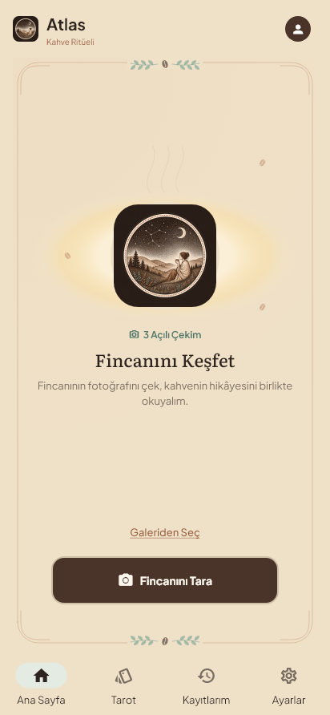
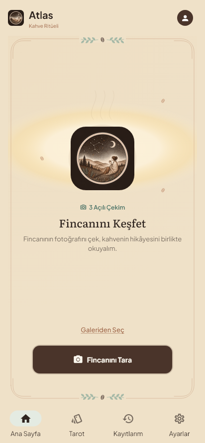
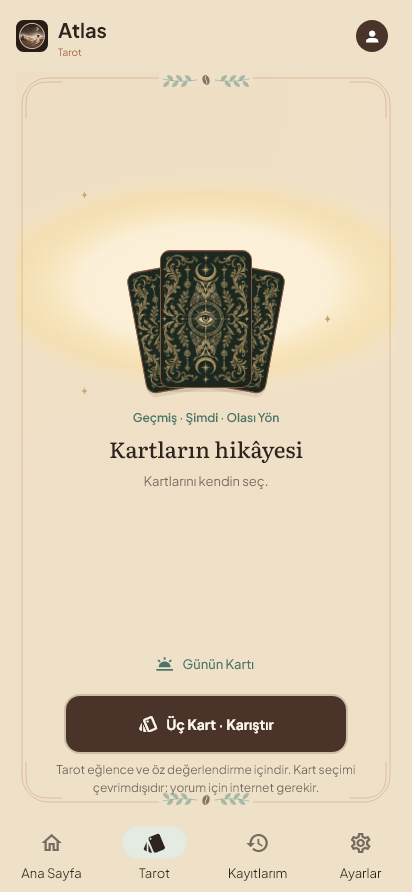
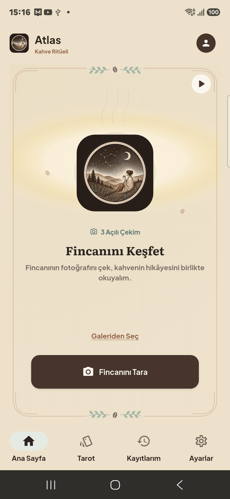
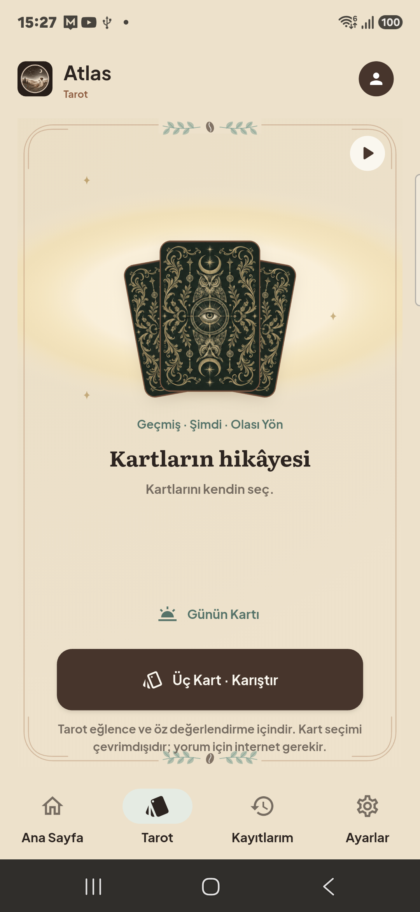

V111 — Kahve / Tarot hale uyumu
Bu görüntüler uygulamanın gerçek Flutter kodundan üretildi. Yapay görsel veya HTML ile yeniden çizilmiş uygulama kullanılmadı. Aynı kod APK'ya derlenir. Sistem çubukları ve telefonun yazı ölçeği nedeniyle cihazın tam ekran görüntüsü farklı boyutta olabilir.
| Görünen görsele göre ölçü | Kahve | Tarot |
|---|
| Orta hizada krem çekirdeğin yan boşluğu | 39dp | 39dp |
| Üstte halesinin sönümlendiği mesafe | 50dp | 50dp |
| Altta halesinin sönümlendiği mesafe | 8dp | 8dp |
Boşluklar yumuşak geçişin tasarım ölçüsüdür; sert bir renk sınırı değildir. ▶ görünse de görünmese de halenin merkezi ve ölçüsü değişmez. Logo, kartlar, başlık, çerçeve ve düğme konumları korunmuştur.
Kahve

V110 · önce
V111 · gerçek Flutter çizimiTarot

V110 · önceV111 · gerçek Flutter çizimiV111 · Gerçek telefon
Samsung SM-A566B, 1080×2340; sistem yazı ölçeği 0,9. Bunlar cihaz ekran görüntüleridir.

Kahve
TarotDoğrulama raporu